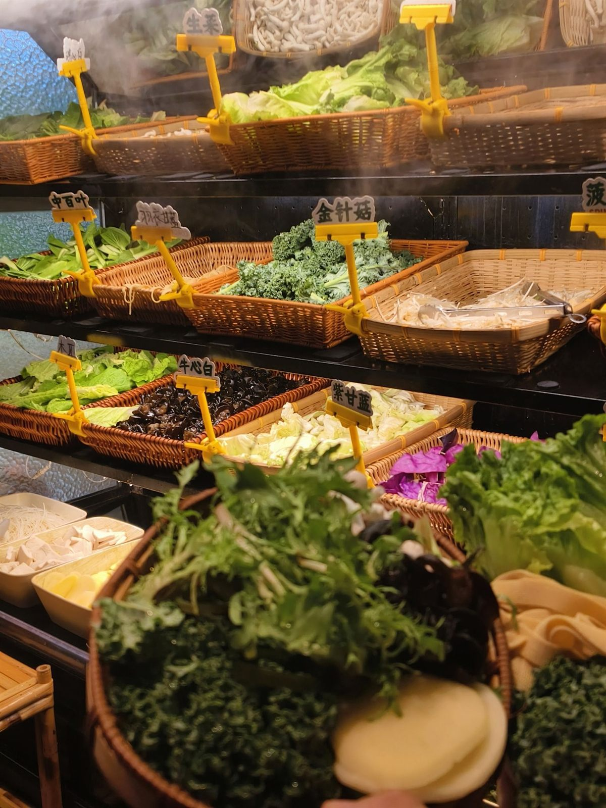
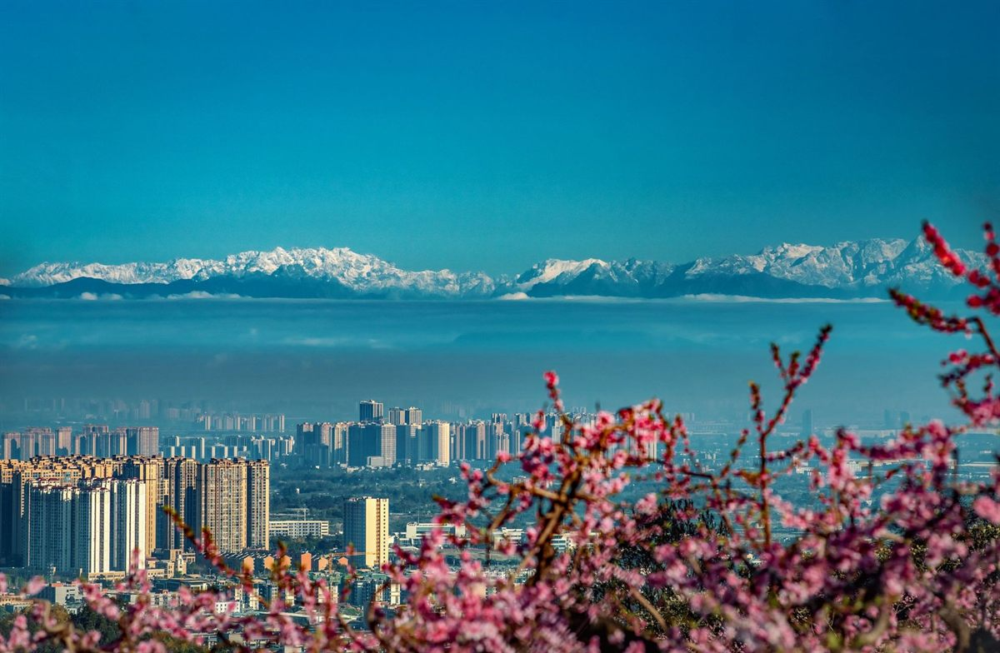
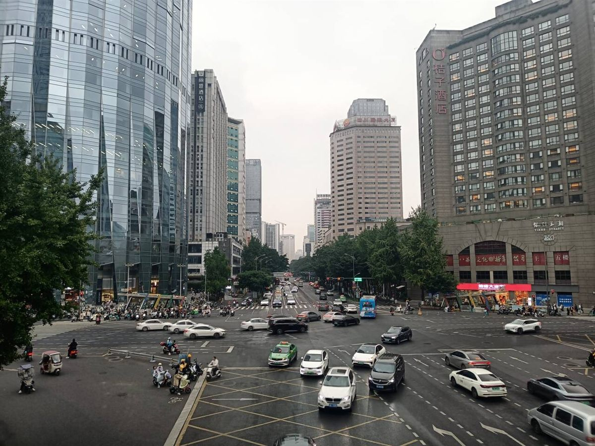

City Profiling
读懂成都 · 图文分点详解
从地理到气候，从经济到生活，五个维度看懂这座城市

01
地理位置与格局
成都位于四川盆地西部，坐拥「天府之国」成都平原最肥沃的核心地带。东临龙泉山，西靠龙门山与邛崃山脉，岷江、沱江两大水系穿境而过。
- 双城格局：以天府广场为中心的老城 + 沿天府大道向南拓展的新区
- 四通八达：国家级枢纽，双机场布局（双流 + 天府）通达全球
- 城市中轴：天府大道一路向南，串联起成都的现在与未来

02
气候与物产
典型的亚热带季风性湿润气候，四季分明、雨量充沛、无霜期长，让成都平原成为天然粮仓。「水旱从人、不知饥馑」的底气，正来自这份得天独厚。
- 春：三月龙泉桃花漫山，四月满城泡桐与芙蓉
- 夏：湿热多雨，恰是吃火锅、摆龙门阵的好时节
- 秋冬：阴天多、日照少，一碗热汤暖胃且暖心

03
经济与城市地位
作为西南地区的经济、科技、金融与交通中心，成都是国务院批复的中国西部地区重要中心城市，GDP 长期稳居全国前十。
- 产业名片：电子信息、装备制造、生物医药、新消费
- 数字经济：游戏、文创、直播电商领跑全国
- 对外窗口：国际航线密布，领事馆数量居中西部首位

04
城市性格：慢生活
成都的「慢」不是懒惰，而是一种从容的处世哲学。研究显示，成都人的幸福感长期位居全国前列——这份淡定，来自富庶的物产与乐观的天性。
- 茶馆文化：全城茶馆过万，一碗盖碗茶可以坐到天荒地老
- 麻将与公园：人民公园、浣花溪畔，是成都人的精神客厅
- 夜间经济：九眼桥、玉林路的深夜，依然灯影温柔
05
宜居与幸福感
连续十余年蝉联「中国最具幸福感城市」榜首，成都把「以人为本」写进了城市肌理：绿道环绕、公园可达、美食管够。
- 公园城市：环城生态区、锦城公园让绿色触手可及
- 天府绿道：万里绿道的设想正在一步步变成现实
- 生活成本：相对友好的房价与物价，是幸福感的底气